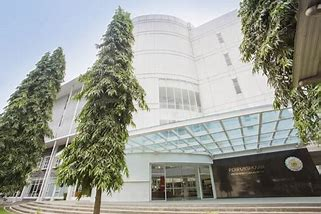

1. Perpustakaan UGM
Di awal berdirinya pada tanggal 1 Maret 1951 Perpustakaan UGM menempati gedung di Jl. Senopati dan saat ini berada di kampus Bulaksumur, Yogyakarta.Selain Perpustakaan Pusat, juga terdapat 18 perpustakaan fakultas, 1 perpustakaan sekolah vokasi, 1 perpustakaan sekolah pascasarjana dan beberapa perpustakaan pusat studi serta jurusan/bagian maupun program studi yang terintegrasi dalam satu sistem informasi perpustakaan.Mulai 1 April 2012 semua unit di Perpustakaan UGM telah menempati satu lokasi yaitu di Bulaksumur 16 Yogyakarta.
2. Perpustakaan Unimed
UPT Perpustakaan Universitas Negeri Medan pindah ke gedung baru Gedung Digital Library Universitas Negeri Medan dengan luas 13.585 m2.Pada hari Sabtu, 14 Desember 2013 Gedung Digital Library Universitas Negeri Medan diresmikan oleh Menteri Pendidikan dan Kebudayaan Republik Indonesia Gedung Digital Library Unimed terdiri dari 5 lantai dengan fasilitas yang lebih baik.
3. Perpustakaan Grhatama Pustaka
.jpeg)
Grhatama Pustaka diresmikan oleh Gubernur DIY Sultan Hamengku Buwono X pada hari Senin tanggal 21 Desember 2015. Bangunan/gedung layanan perpustakaan ini merupakan perpaduan konsep modern dan tradisional. Kemegahan dan berbagai fasilitas mengakomodir kebutuhan masyarakat modern akan kemudahan dan kenyamanan. Filosofi bangunan mencerminkan semangat keistimewaan Jogja serta cita-cita kesempurnaan manusia Jawa sebagai pribadi yang prakoso, wulung, agung dan wangi melalui pemanfaatan perpustakaan.Terdiri dari 3 lantai Grhatama Pustaka siap menjadi destinasi rekreatif edukatif bagi masyarakat DIY dan sekitarnya.